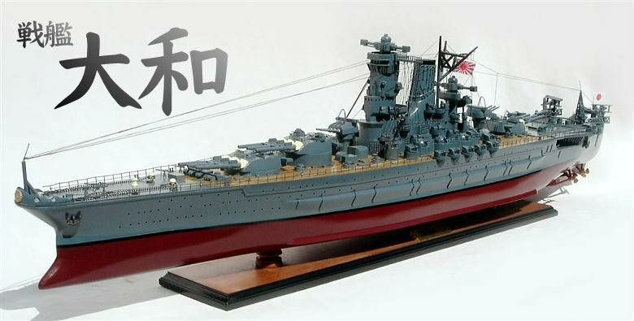

大和級戰艦（Yamato Class）
大和號與武藏號是二戰世界上最大的戰艦，擁有超強火力與裝甲，但戰爭後期主要作為火力支援使用。
大和號與武藏號是二戰世界上最大的戰艦，擁有超強火力與裝甲，但戰爭後期主要作為火力支援使用。
陸奧號是此級的二號艦，雖不如大和級巨大，仍是當時火力最強的戰艦之一。
威爾斯親王號曾與俾斯麥交戰，並搭載丘吉爾參與制定大西洋憲章。
德國最強戰艦，首次作戰便擊沉胡德號，後被英軍追擊擊沉。
包含愛荷華、新澤西、密蘇里、威斯康星，速度快且長期服役，參加多場現代戰爭。
美國在二戰中最成功的驅逐艦，性能穩定，建造數量最多。
英國皇家海軍高火力驅逐艦，擁有良好的速度與多功能性。
法國高速驅逐艦，裝備強大火炮，性能先進。